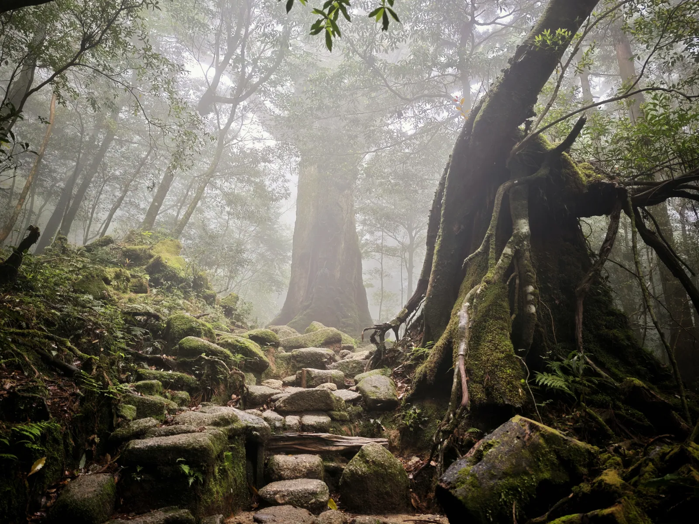
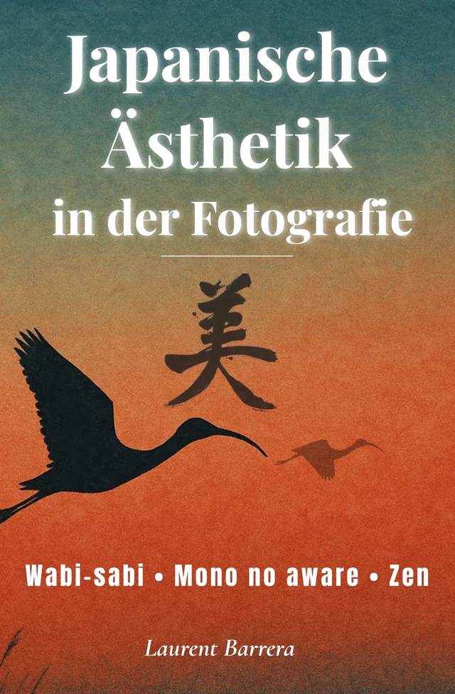
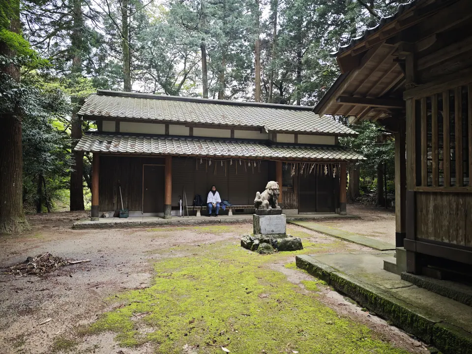
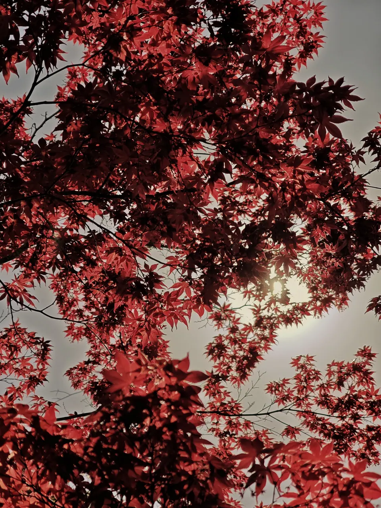
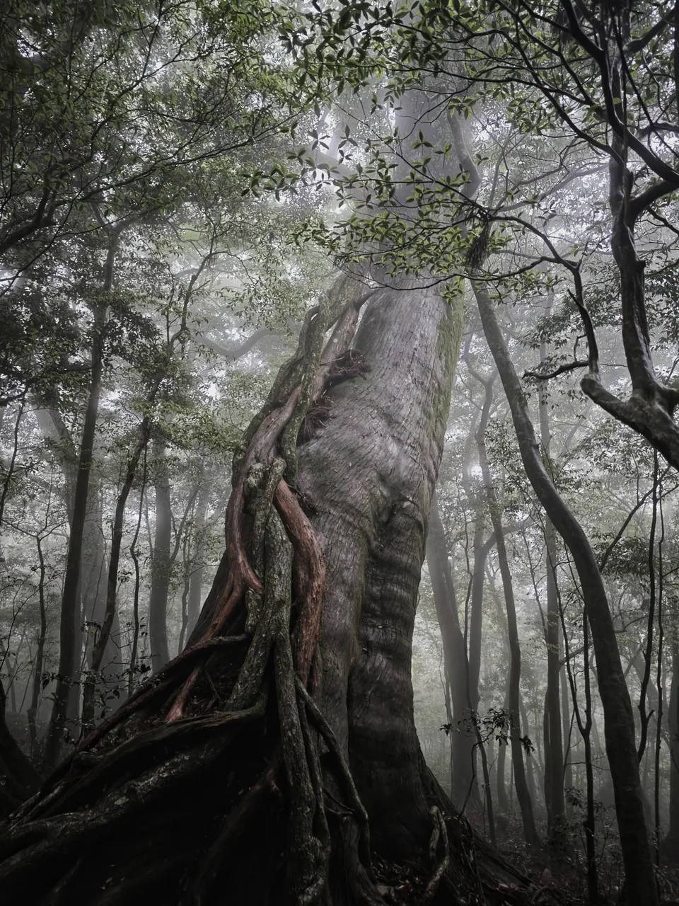
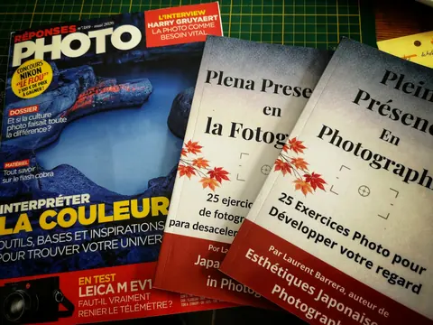
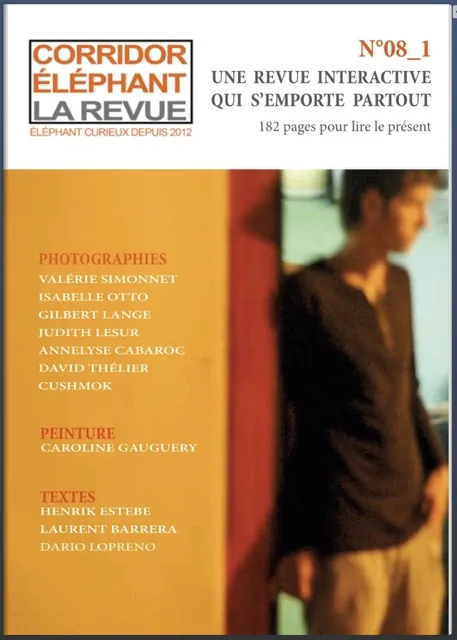
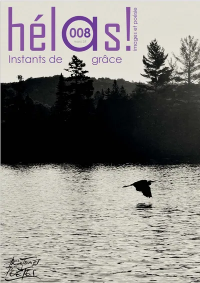
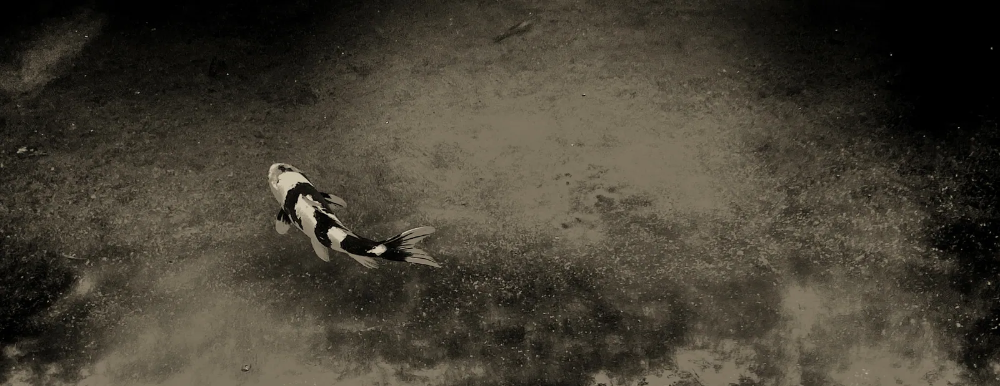

Auteur et photographe · Toulon
LaurentBarrera
« J’explore ces éclats d’éphémère comme on façonne des haïkus visuels. »
Entrer dans le sous-bois
À paraître le 5 novembre 2026
Les arbres sacrés du Japon
Quand les arbres deviennent présence
Parution dans 16 jours.
Disponible en librairie
Des forêts anciennes de Yakushima aux camphriers monumentaux de Kyūshū, Laurent Barrera parcourt le Japon à la rencontre de ces arbres millénaires vénérés comme des présences vivantes.
La démarche
La nature est mon terrain d’expression privilégié : mon refuge, mon laboratoire, ma première source d’inspiration. Son mystère, ses lumières mouvantes, ses instants fragiles nourrissent mon regard et mon écriture. Photographe et auteur, j’explore ces éclats d’éphémère comme on façonne des haïkus visuels : des images épurées, denses, ciselées, qui invitent à la poésie et ouvrent un dialogue silencieux avec celui qui les contemple.
Chaque photographie devient trace, résonance, fragment de destin. Cette quête intime m’a naturellement conduit vers le Japon. J’y ai trouvé une esthétique, un monde où la beauté réside dans l’impermanence, dans la fragilité des choses, dans le presque rien.
Travaux photographiques
Six séries, six clairières
Chaque série est une salle. Les photographies y sont montrées entières, sans recadrage.


Livres
Cinq livres, un même regard
Photographies et récits · 5 novembre 2026
Les arbres sacrés du Japon
Quand les arbres deviennent présence
À paraître
Une invitation à découvrir ces arbres millénaires qui occupent une place singulière dans la culture et la spiritualité japonaises, des forêts anciennes de Yakushima aux camphriers monumentaux de Kyūshū.
- Éditeur
- Le Prunier SULLY
- Parution
- 5 novembre 2026
- Prix
- 22 €
Photographies et récits · 5 novembre 2026
Les arbres sacrés du Japon
Quand les arbres deviennent présence
À paraître
Une invitation à découvrir ces arbres millénaires qui occupent une place singulière dans la culture et la spiritualité japonaises, des forêts anciennes de Yakushima aux camphriers monumentaux de Kyūshū.
- Éditeur
- Le Prunier SULLY
- Parution
- 5 novembre 2026
- Prix
- 22 €

Essai et pratique · Février 2026
Pleine Présence en Photographie
25 exercices photo pour développer votre regard
Et si photographier consistait d’abord à être pleinement présent ? Une approche plus contemplative de la photographie, fondée sur l’attention, le silence et la relation au monde.
- Parution
- Février 2026
- Langues
- français, anglais, espagnol
- Formats
- papier et numérique
- Prix
- à compléter

Essai · Décembre 2025
Esthétiques japonaises en photographie
Wabi-sabi · Mono no aware · Zen
Nouvelle édition revue et augmentée
Une exploration des grandes sensibilités esthétiques japonaises (wabi-sabi, ma, yūgen, mono no aware, zen) et de la manière dont elles peuvent transformer notre pratique photographique.
- Parution
- Décembre 2025
- Langues
- français, anglais, espagnol, italien, allemand
- Formats
- papier et numérique
- Prix
- à compléter

Nouvelles · Octobre 2025
Fragrances du Japon
17 histoires pour revenir à l’essentiel
À travers dix-sept nouvelles, le Japon devient le décor de rencontres, de voyages et d’instants où une existence peut soudain changer de direction.
- Parution
- Octobre 2025
- Langues
- français et anglais
- Disponible
- Fnac.com, Librinova, Amazon
- Prix
- à compléter

Livre photographique · Septembre 2022
Koï
Livre photographique
Premier prix du livre photo, Namur 2022
La série des carpes koï réunie en livre. Imprimé par Escourbiac, reconnu pour son savoir-faire et son respect de l’environnement.
- Format
- 20 × 28 cm, 64 pages
- Tirage
- 500 exemplaires numérotés
- Reliure
- couverture souple à rabats
- ISBN
- 979-10-699-9769-1
- Prix
- 34 €
Parcours
Les cernes d’un parcours
Chaque année est un cerne. Plus l’année a été riche, plus le cerne est épais.
De 2019, au cœur, à 2026, en pointillé : l’année n’est pas terminée.
2019 1 prix
- 2019PrixGrand prix du concours des Rencontres d’Arles / Olympus
2020 2 prix
- Nov. 2020PrixPremier prix du concours Olympus / Wilderness Safaris (nature sauvage)Série Horses Kami →
- Déc. 2020PrixCoup de cœur du jury, 1er concours d’art contemporain ART4COMPETITION
2021 4 expos · 4 prix · 1 conf. et proj.
- Janv. 2021PrixMonochrome Photography Awards 2020 (Royaume-Uni) : mention honorable
- Févr. 2021PrixTokyo International Foto Awards 2020 : mention honorable
- Mai 2021ExpositionExpo4Art, Halles des Blancs-Manteaux, Paris« Mes animaux totem »
- Sept. 2021ExpositionFestival Spot Nature, Jardins suspendus, Le HavreSérie Horses Kami →
- Oct. 2021ExpositionRencontres photographiques du Prieuré, Salaise-sur-SanneSérie Horses Kami →
- Oct. 2021ConférenceConférence aux Rencontres photographiques de Salaise-sur-Sanne
- Oct. 2021PrixConcours international CEWE : sélection « top 1000 »Série « Ibex Dream »
- Nov. 2021ExpositionPhotomenton, MentonSérie Horses Kami →
- Déc. 2021PrixBudapest International Foto Awards : Silver AwardSérie Horses Kami →
2022 3 expos · 3 prix · 2 publications · 2 conf. et proj.
- Févr. 2022PublicationLe petit livre des Kami, zine tiré à 20 exemplaires
- Mai 2022ExpositionGravity Festival, Fondation GoodPlanet, Paris
- Mai 2022 et 2023PrixPhotos primées et exposées au Gravity Festival, Fondation GoodPlanet
- Juin 2022ExpositionFestival Photo dans Lerpt (près de Saint-Étienne)
- Juin 2022ConférenceClub photo Objectif Image, Lyon« Influences des esthétiques japonaises »
- 30 juil. 2022ProjectionNuits photographiques de Pierrevert, 14e éditionSérie Carpes Koï →
- Sept. 2022PublicationLivre « Koï », 500 exemplaires numérotésSérie Carpes Koï →
- Oct. 2022ExpositionFestival photo de BesançonFinaliste du prix du jury
- 23 oct. 2022PrixPremier prix du livre photo, Festival international de NamurSérie Carpes Koï →
- 3 nov. 2022PrixPrix du jury Géo Magazine / Météo France pour L’Œil du climatJury présidé par Yann Arthus-Bertrand
2023 2 expos · 3 prix · 2 conf. et proj.
- 18 févr. 2023ProjectionNuit de la Photo, La Chaux-de-Fonds (Suisse)Série « Qui comme Ulysse »
- 27 mai 2023ProjectionPrésence(s) Photographie, MontélimarSérie Carpes Koï →
- Juin 2023Prix1er prix du jury, Carreau du Temple et Wipplay, festival Food Temple, Paris
- Été 2023ExpositionExposition solo « Art et vin », Domaine de la Suffrène, Bandol
- Juil. 2023Prix3e prix du jury « Mobilité écologie », Taco and co, Arles
- Oct. 2023ExpositionFestival Phot’Aix, Aix-en-Provence
- Oct. 2023PrixFinaliste du concours « Identité », festival photo de Bucarest
2024 7 expos · 2 prix · 2 presse · 1 conf. et proj.
- Début 2024ExpositionExposition solo, Galerie de l’Atelier, Six-Fours-les-Plages
- Févr. 2024ConférenceGalerie de l’Atelier, Six-Fours« Influences du shintoïsme, du bouddhisme et des esthétiques japonaises dans la démarche photographique »
- Févr.–mars 2024ExpositionExposition « Protean », Hôtel Spa Le Calendal, ArlesSérie Protean →
- Févr. 2024ExpositionExposition collective sur la mobilité, Galerie Putman, Arles
- Mars 2024PresseCouverture de la revue Hélas !, n° 8
- 2024PressePochette de l’album « Temps suspendu » de Richard DePaul
- Mai–juin 2024ExpositionExposition solo « Japon poétique et sacré », L’Adresse, Toulon
- 10–22 juin 2024ExpositionGalerie Marie Poscia, HyèresSérie Shintô →
- Juin 2024ExpositionDecagon Gallery, Brooklyn, New York« H2O, the essence of water »
- Nov. 2024PrixPhoto of the Month, Decagon Gallery, New York« Fixing clouds » (Réparer les nuages)
- Déc. 2024PrixLauréat du concours Photo Magazine, catégorie animauxSérie Animal →
- Déc. 2024–janv. 2025ExpositionGalerie de la Fontaine Obscure, Aix-en-Provence
2025 5 expos · 2 prix · 2 publications
- Avr.–juin 2025ExpositionRestaurant Canons, MontréalSérie Shintô →
- Mai 2025Exposition1er festival ART les Images, ArlesImpression sur papier japonais washi
- Mai 2025PrixCoup de cœur du jury, Wipplay et festival photo L’Homme et la MerExposé au Guilvinec, été 2025
- Juin 2025PrixFinaliste du concours « Paysage », Réponses Photo n° 380
- Été 2025ExpositionFestival Les Chemins de la Photo, BelpechSérie Shintô →
- Été 2025ExpositionOFF du festival d’Arles, restaurant Izakayan
- Automne 2025ExpositionFestival Chercheurs d’images, Grand-Champ (Bretagne)
- Oct. 2025PublicationFragrances du Japon, recueil de 17 nouvelles
- Déc. 2025PublicationEsthétiques japonaises en photographie
2026 1 expo · 3 publications · 4 presse
- Févr. 2026PublicationPleine Présence en Photographie
- Mars 2026Exposition« Les Escales artistiques », Docks de Marseille
- Avr. 2026PresseChasseur d’Images : Esthétiques japonaises sélectionné par la rédaction
- Mai 2026PresseRéponses Photo n° 389 : Pleine Présence dans la rubrique « L’essentiel »
- Juin 2026PresseChasseur d’Images n° 476 : entretien de quatre pages
- Juil. 2026PresseRevue Corridor Éléphant : texte « Apprendre à regarder moins »
- Sept. 2026PublicationEsthétiques japonaises en photographie, édition allemande
- 5 nov. 2026À paraîtreLes arbres sacrés du Japon, Éditions Le Prunier SULLY
Dates à confirmer 2 expositions
- Novembre, année à confirmerExpositionExpositions au Japon : Éphémère Tokyo
- Date à confirmerExpositionExposition solo à la mairie d’honneur de Toulon
Distinctions

- Rencontres d’Arles / Olympus Grand prix 2019
- Olympus / Wilderness Safaris Premier prix 2020
- Budapest International Foto Awards Silver Award 2021
- Festival international de Namur Premier prix du livre photo 2022
- Géo Magazine / Météo France Prix du jury 2022
- Carreau du Temple / Wipplay 1er prix du jury 2023
- Decagon Gallery, New York Photo of the Month 2024
- Photo Magazine Lauréat 2024
Actualités
Carnet de route

Esthétiques japonaises en photographie paraît en allemand
L’édition allemande rejoint les éditions française, anglaise, espagnole et italienne.

Fragrances du Japon fête sa première année
Un an après la parution de son premier recueil de nouvelles, nées de voyages et de rencontres au Japon.

Après le hanami, le Japon à l’heure du kōyō
Le printemps suit les cerisiers ; l’automne a lui aussi son calendrier, ses voyages et ses pèlerinages.

Tokowaka, toujours jeune
Durer en se renouvelant : un mot japonais et les arbres dont le feuillage traverse les saisons.
Presse et revues
Dans les pages des magazines
N° 476, juin 2026 : quatre pages et un entretien avec Benoît Gaborit

N° 389, mai 2026 : Pleine Présence dans la rubrique « L’essentiel »

Texte « Apprendre à regarder moins : vers une sensibilité néo-japoniste en photographie »

Revue n° 8, mars 2024 : photographie de couverture
Tirages d’art
Voir l’œuvre au mur
Les photographies sont proposées en tirages d’art numérotés, prix sur demande.

Échelle approximative · banc de 120 cm
Formats illustratifs : les formats réels des tirages sont à compléter avec l’auteur.


Contact
 Écrire à Laurent
Écrire à Laurent
- E-maillaurentbarrera@hotmail.com
- Téléphone06 64 63 23 11
- AtelierToulon (Var), visite sur rendez-vous